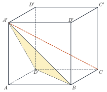
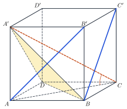

Angle Formulas in SpaceCông thức tính góc trong không gian
Grade 12 · Topic: Coordinate Geometry in SpaceLớp 12 · Chủ đề: Phương pháp tọa độ trong không gian
1Lesson IntroductionGiới thiệu bài học
Learning goalsMục tiêu bài học
By the end of this lesson you can:
Sau bài học này, em có thể:
compute the angle between two lines from their direction vectors;
tính góc giữa hai đường thẳng theo vectơ chỉ phương;
compute the angle between a line and a plane (with sine) and between two planes;
tính góc giữa đường thẳng và mặt phẳng (dùng sin) và góc giữa hai mặt phẳng;
put a cube or box in coordinates to compute angles;
gắn hệ tọa độ vào hình lập phương, hình hộp để tính góc;
find angles of inclination in real situations (roofs, ramps, solar panels).
tính góc nghiêng trong thực tế (mái nhà, dốc, tấm pin mặt trời).
2Mathematical VocabularyTừ vựng Toán học
angle between two lines – in \([0^\circ;90^\circ]\): \(\cos(d_1,d_2)=\dfrac{|\vec u_1\cdot\vec u_2|}{|\vec u_1|\,|\vec u_2|}\).
góc giữa hai đường thẳng (tọa độ) – thuộc \([0^\circ;90^\circ]\): \(\cos(d_1,d_2)=\dfrac{|\vec u_1\cdot\vec u_2|}{|\vec u_1|\,|\vec u_2|}\).
angle between a line and a plane – \(\sin(d,(P))=\dfrac{|\vec u\cdot\vec n|}{|\vec u|\,|\vec n|}\) – sine, because \(\vec n\) is perpendicular to the plane.
góc giữa đường thẳng và mặt phẳng (tọa độ) – \(\sin(d,(P))=\dfrac{|\vec u\cdot\vec n|}{|\vec u|\,|\vec n|}\) – dùng sin vì \(\vec n\) vuông góc với mặt phẳng.
angle between two planes – in \([0^\circ;90^\circ]\): \(\cos((P),(Q))=\dfrac{|\vec n_1\cdot\vec n_2|}{|\vec n_1|\,|\vec n_2|}\).
góc giữa hai mặt phẳng – thuộc \([0^\circ;90^\circ]\): \(\cos((P),(Q))=\dfrac{|\vec n_1\cdot\vec n_2|}{|\vec n_1|\,|\vec n_2|}\).
angle of inclination – the angle between a surface (or a line) and the horizontal ground.
góc nghiêng – góc giữa một mặt (hoặc một đường) với mặt đất nằm ngang.
3Useful English PhrasesCụm từ tiếng Anh thường gặp
The angle between the two lines is sixty degrees.
Góc giữa hai đường thẳng bằng \(60^\circ\).
Take the absolute value of the dot product.
Lấy giá trị tuyệt đối của tích vô hướng.
For a line and a plane we use the sine.
Với đường thẳng và mặt phẳng ta dùng sin.
Place the cube in a coordinate system.
Gắn hình lập phương vào hệ tọa độ.
The panel is tilted at about thirty-seven degrees.
Tấm pin nghiêng khoảng \(37^\circ\).
4Prerequisite ReviewÔn tập kiến thức nền
Grade 12, Bài 7: \(\cos(\vec u,\vec v)=\dfrac{\vec u\cdot\vec v}{|\vec u||\vec v|}\) (can be negative). Bài 14–15: normal vector of a plane, direction vector of a line. Grade 11: the angle between two lines lies in \([0^\circ;90^\circ]\).
Lớp 12, Bài 7: \(\cos(\vec u,\vec v)=\dfrac{\vec u\cdot\vec v}{|\vec u||\vec v|}\) (có thể âm). Bài 14–15: vectơ pháp tuyến của mặt phẳng, vectơ chỉ phương của đường thẳng. Lớp 11: góc giữa hai đường thẳng thuộc \([0^\circ;90^\circ]\).
5TheoryLý thuyết
5.1 Angle between two linesGóc giữa hai đường thẳng
FormulaCông thức
If \(d_1\), \(d_2\) have direction vectors \(\vec u_1=(a_1;b_1;c_1)\), \(\vec u_2=(a_2;b_2;c_2)\), then \[\cos(d_1,d_2)=\dfrac{|\vec u_1\cdot\vec u_2|}{|\vec u_1|\,|\vec u_2|}=\dfrac{|a_1a_2+b_1b_2+c_1c_2|}{\sqrt{a_1^2+b_1^2+c_1^2}\,\sqrt{a_2^2+b_2^2+c_2^2}}.\] The absolute value makes the angle lie in \([0^\circ;90^\circ]\). \(d_1\perp d_2\iff\vec u_1\cdot\vec u_2=0\).
Nếu \(d_1\), \(d_2\) có vectơ chỉ phương \(\vec u_1=(a_1;b_1;c_1)\), \(\vec u_2=(a_2;b_2;c_2)\) thì \[\cos(d_1,d_2)=\dfrac{|\vec u_1\cdot\vec u_2|}{|\vec u_1|\,|\vec u_2|}=\dfrac{|a_1a_2+b_1b_2+c_1c_2|}{\sqrt{a_1^2+b_1^2+c_1^2}\,\sqrt{a_2^2+b_2^2+c_2^2}}.\] Dấu giá trị tuyệt đối bảo đảm góc thuộc \([0^\circ;90^\circ]\). \(d_1\perp d_2\iff\vec u_1\cdot\vec u_2=0\).
5.2 Angle between a line and a planeGóc giữa đường thẳng và mặt phẳng
FormulaCông thức
If \(d\) has direction vector \(\vec u\) and \((P)\) has normal vector \(\vec n\), then \[\sin(d,(P))=\dfrac{|\vec u\cdot\vec n|}{|\vec u|\,|\vec n|}.\] Reason: the angle between \(d\) and \(\vec n\) is \(90^\circ-(d,(P))\).
Nếu \(d\) có vectơ chỉ phương \(\vec u\), \((P)\) có vectơ pháp tuyến \(\vec n\) thì \[\sin(d,(P))=\dfrac{|\vec u\cdot\vec n|}{|\vec u|\,|\vec n|}.\] Lí do: góc giữa \(d\) và giá của \(\vec n\) bằng \(90^\circ-(d,(P))\).
5.3 Angle between two planesGóc giữa hai mặt phẳng
FormulaCông thức
If \((P)\), \((Q)\) have normal vectors \(\vec n_1\), \(\vec n_2\), then \[\cos((P),(Q))=\dfrac{|\vec n_1\cdot\vec n_2|}{|\vec n_1|\,|\vec n_2|}.\] \((P)\perp(Q)\iff\vec n_1\cdot\vec n_2=0\). The angle with the ground \((Oxy)\) uses \(\vec k=(0;0;1)\).
Nếu \((P)\), \((Q)\) có vectơ pháp tuyến \(\vec n_1\), \(\vec n_2\) thì \[\cos((P),(Q))=\dfrac{|\vec n_1\cdot\vec n_2|}{|\vec n_1|\,|\vec n_2|}.\] \((P)\perp(Q)\iff\vec n_1\cdot\vec n_2=0\). Góc với mặt đất \((Oxy)\) dùng \(\vec k=(0;0;1)\).
| AngleGóc | Vectors usedVectơ dùng | FunctionHàm |
|---|---|---|
| line – lineđường – đường | \(\vec u_1,\vec u_2\) | \(\cos\) |
| line – planeđường – mặt | \(\vec u,\vec n\) | \(\sin\) |
| plane – planemặt – mặt | \(\vec n_1,\vec n_2\) | \(\cos\) |

Watch out!Lưu ý
Do not forget the absolute value: the angle between lines or planes is never obtuse. For a line and a plane the formula gives the sine. If \(\cos\) is not a "nice" value, give the angle approximately (e.g. \(\approx54{,}74^\circ\)).
Đừng quên dấu giá trị tuyệt đối: góc giữa hai đường thẳng, hai mặt phẳng không bao giờ tù. Với đường thẳng và mặt phẳng, công thức cho sin. Nếu côsin không phải giá trị "đẹp", ghi góc gần đúng (ví dụ \(\approx54{,}74^\circ\)).
6Worked ExamplesVí dụ có lời giải
ExampleVí dụ 1BasicCơ bản – Two linesHai đường thẳng
Find the angle between \(d_1: \begin{cases}x=1+t\\y=2+t\\z=3\end{cases}\) and \(d_2: \begin{cases}x=2\\y=1+s\\z=-1+s\end{cases}\) (parameter \(s\)).
Tính góc giữa \(d_1: \begin{cases}x=1+t\\y=2+t\\z=3\end{cases}\) và \(d_2: \begin{cases}x=2\\y=1+s\\z=-1+s\end{cases}\) (tham số \(s\)).
Analysis: Read the coefficients of \(t\) and \(s\).
Phân tích: Đọc hệ số của \(t\) và \(s\).
\(\vec u_1=(1;1;0)\), \(\vec u_2=(0;1;1)\), \(\vec u_1\cdot\vec u_2=1\).
\(\vec u_1=(1;1;0)\), \(\vec u_2=(0;1;1)\), \(\vec u_1\cdot\vec u_2=1\).
\(\cos=\dfrac{1}{\sqrt2\cdot\sqrt2}=\dfrac12\).
\(\cos=\dfrac{1}{\sqrt2\cdot\sqrt2}=\dfrac12\).
\((d_1,d_2)=60^\circ\).
\((d_1,d_2)=60^\circ\).
ExampleVí dụ 2BasicCơ bản – Line and planeĐường thẳng và mặt phẳng
Find the angle between \(d: \begin{cases}x=1+t\\y=2\\z=t\end{cases}\) and \((P): x+y-3=0\).
Tính góc giữa \(d: \begin{cases}x=1+t\\y=2\\z=t\end{cases}\) và \((P): x+y-3=0\).
Analysis: Use the sine formula.
Phân tích: Dùng công thức sin.
\(\vec u=(1;0;1)\), \(\vec n=(1;1;0)\), \(|\vec u\cdot\vec n|=1\).
\(\vec u=(1;0;1)\), \(\vec n=(1;1;0)\), \(|\vec u\cdot\vec n|=1\).
\(\sin\varphi=\dfrac{1}{\sqrt2\cdot\sqrt2}=\dfrac12\).
\(\sin\varphi=\dfrac{1}{\sqrt2\cdot\sqrt2}=\dfrac12\).
\(\varphi=30^\circ\) (not \(60^\circ\)!).
\(\varphi=30^\circ\) (không phải \(60^\circ\)!).
ExampleVí dụ 3IntermediateTrung bình – Two planesHai mặt phẳng
Find the angle between \((P): x-z+1=0\) and \((Q): y-z-2=0\).
Tính góc giữa hai mặt phẳng \((P): x-z+1=0\) và \((Q): y-z-2=0\).
Analysis: Use the normal vectors.
Phân tích: Dùng hai vectơ pháp tuyến.
\(\vec n_1=(1;0;-1)\), \(\vec n_2=(0;1;-1)\), \(\vec n_1\cdot\vec n_2=1\).
\(\vec n_1=(1;0;-1)\), \(\vec n_2=(0;1;-1)\), \(\vec n_1\cdot\vec n_2=1\).
\(\cos=\dfrac{1}{\sqrt2\cdot\sqrt2}=\dfrac12\).
\(\cos=\dfrac{1}{\sqrt2\cdot\sqrt2}=\dfrac12\).
\(((P),(Q))=60^\circ\).
\(((P),(Q))=60^\circ\).
ExampleVí dụ 4IntermediateTrung bình – Angles in a cubeGóc trong hình lập phương
Cube \(ABCD.A'B'C'D'\) with side 1. Find
a) the angle between \(A'C\) and \((ABCD)\);
b) the angle between \((A'BD)\) and \((ABCD)\);
c) the angle between \(AB'\) and \(BC'\).
Cho hình lập phương \(ABCD.A'B'C'D'\) cạnh 1. Tính
a) góc giữa \(A'C\) và \((ABCD)\);
b) góc giữa \((A'BD)\) và \((ABCD)\);
c) góc giữa \(AB'\) và \(BC'\).

Analysis: \(A(0;0;0)\), \(B(1;0;0)\), \(D(0;1;0)\), \(A'(0;0;1)\); then \(C(1;1;0)\), \(B'(1;0;1)\), \(C'(1;1;1)\); \((ABCD)\) is \(z=0\) with \(\vec k=(0;0;1)\).
Phân tích: \(A(0;0;0)\), \(B(1;0;0)\), \(D(0;1;0)\), \(A'(0;0;1)\); khi đó \(C(1;1;0)\), \(B'(1;0;1)\), \(C'(1;1;1)\); \((ABCD)\) là \(z=0\), có \(\vec k=(0;0;1)\).
a) \(\overrightarrow{A'C}=(1;1;-1)\): \(\sin\varphi=\dfrac{1}{\sqrt3}\Rightarrow\varphi\approx35{,}26^\circ\).
a) \(\overrightarrow{A'C}=(1;1;-1)\): \(\sin\varphi=\dfrac{1}{\sqrt3}\Rightarrow\varphi\approx35{,}26^\circ\).
b) \((A'BD): x+y+z-1=0\), \(\vec n=(1;1;1)\): \(\cos=\dfrac{1}{\sqrt3}\Rightarrow\approx54{,}74^\circ\).
b) \((A'BD): x+y+z-1=0\), \(\vec n=(1;1;1)\): \(\cos=\dfrac{1}{\sqrt3}\Rightarrow\approx54{,}74^\circ\).
c) \(\overrightarrow{AB'}=(1;0;1)\), \(\overrightarrow{BC'}=(0;1;1)\): \(\cos=\dfrac12\Rightarrow60^\circ\).
c) \(\overrightarrow{AB'}=(1;0;1)\), \(\overrightarrow{BC'}=(0;1;1)\): \(\cos=\dfrac12\Rightarrow60^\circ\).
a) \(\approx35{,}26^\circ\);
b) \(\approx54{,}74^\circ\);
c) \(60^\circ\).
a) \(\approx35{,}26^\circ\);
b) \(\approx54{,}74^\circ\);
c) \(60^\circ\).
ExampleVí dụ 5AdvancedNâng cao – Solar panelTấm pin mặt trời
A solar panel lies in the plane \((P): 3y+4z-12=0\) (unit: m, the ground is \((Oxy)\)). At noon the sun rays have direction \(\vec u=(0;-1;-1)\). Find the angle of inclination of the panel and the angle between the rays and the panel.
Một tấm pin mặt trời nằm trong mặt phẳng \((P): 3y+4z-12=0\) (đơn vị mét, mặt đất là \((Oxy)\)). Buổi trưa tia nắng có vectơ chỉ phương \(\vec u=(0;-1;-1)\). Tính góc nghiêng của tấm pin và góc giữa tia nắng với tấm pin.
Analysis: Plane – plane with \(\vec k\); line – plane with sine.
Phân tích: Mặt – mặt dùng \(\vec k\); đường – mặt dùng sin.
\(\vec n=(0;3;4)\), \(|\vec n|=5\): \(\cos=\dfrac{|4|}{5}=0{,}8\Rightarrow\approx36{,}87^\circ\).
\(\vec n=(0;3;4)\), \(|\vec n|=5\): \(\cos=\dfrac{|4|}{5}=0{,}8\Rightarrow\approx36{,}87^\circ\).
\(\sin\varphi=\dfrac{|0-3-4|}{\sqrt2\cdot5}=\dfrac{7}{5\sqrt2}\approx0{,}99\Rightarrow\varphi\approx81{,}87^\circ\).
\(\sin\varphi=\dfrac{|0-3-4|}{\sqrt2\cdot5}=\dfrac{7}{5\sqrt2}\approx0{,}99\Rightarrow\varphi\approx81{,}87^\circ\).
The panel is tilted about \(36{,}87^\circ\); the rays hit it at about \(81{,}87^\circ\) – almost perpendicular, which is good for collecting energy.
Tấm pin nghiêng khoảng \(36{,}87^\circ\); tia nắng tạo với tấm pin góc khoảng \(81{,}87^\circ\) – gần vuông góc, thuận lợi để thu năng lượng.
7PracticeBài tập luyện tập
A. Multiple ChoiceA. Trắc nghiệm nhiều lựa chọn
The angle between \(\begin{cases}x=1+t\\y=2+t\\z=0\end{cases}\) and \(\begin{cases}x=s\\y=1\\z=3\end{cases}\) is…
Góc giữa hai đường thẳng \(\begin{cases}x=1+t\\y=2+t\\z=0\end{cases}\) và \(\begin{cases}x=s\\y=1\\z=3\end{cases}\) bằng…
Answer: d. \(\cos=\dfrac{1}{\sqrt{2}\sqrt{1}}\).
Đáp án d. \(\cos=\dfrac{1}{\sqrt{2}\sqrt{1}}\).
The angle between \(\begin{cases}x=1\\y=t\\z=2+t\end{cases}\) and \((P): y-3=0\) is…
Góc giữa đường thẳng \(\begin{cases}x=1\\y=t\\z=2+t\end{cases}\) và \((P): y-3=0\) bằng…
Answer: c. \(\sin\varphi=\dfrac{1}{\sqrt{2}\sqrt{1}}\).
Đáp án c. \(\sin\varphi=\dfrac{1}{\sqrt{2}\sqrt{1}}\).
The angle between \(x+y+2=0\) and \(y+z-1=0\) is…
Góc giữa hai mặt phẳng \(x+y+2=0\) và \(y+z-1=0\) bằng…
Answer: b. \(\cos=\dfrac{1}{\sqrt{2}\sqrt{2}}\).
Đáp án b. \(\cos=\dfrac{1}{\sqrt{2}\sqrt{2}}\).
B. True or FalseB. Đúng hoặc sai
Lines with direction vectors \((1;\,2;\,2)\) and \((2;\,1;\,2)\) make an angle with cosine \(\dfrac{8}{9}\).
Hai đường thẳng có vectơ chỉ phương \((1;\,2;\,2)\) và \((2;\,1;\,2)\) tạo với nhau góc có côsin bằng \(\dfrac{8}{9}\).
\(\cos=\dfrac{|8|}{3\cdot3}=\dfrac{8}{9}\).
\(\cos=\dfrac{|8|}{3\cdot3}=\dfrac{8}{9}\).
The angle between two lines can be \(120^\circ\).
Góc giữa hai đường thẳng có thể bằng \(120^\circ\).
It always lies in \([0^\circ;90^\circ]\).
Góc giữa hai đường thẳng luôn thuộc \([0^\circ;90^\circ]\).
C. Short AnswerC. Trả lời ngắn
\(d_1\) has direction \((1;\,2;\,-1)\), \(d_2\) has direction \((m;1;3)\). Find \(m\) so that \(d_1\perp d_2\).
\(d_1\) có vectơ chỉ phương \((1;\,2;\,-1)\), \(d_2\) có vectơ chỉ phương \((m;1;3)\). Tìm \(m\) để \(d_1\perp d_2\).
Enter a number.
Nhập một số.
\(1m-1=0\Rightarrow m=1\).
\(1m-1=0\Rightarrow m=1\).
A roof lies in the plane \(y+z-4=0\) (ground \((Oxy)\)). Find its angle of inclination in degrees.
Mái nhà nằm trong mặt phẳng \(y+z-4=0\) (mặt đất là \((Oxy)\)). Tính góc nghiêng của mái theo độ.
Enter a number.
Nhập một số.
\(\cos=\dfrac{1}{\sqrt{2}}\Rightarrow45^\circ\).
\(\cos=\dfrac{1}{\sqrt{2}}\Rightarrow45^\circ\).
A. Multiple ChoiceA. Trắc nghiệm nhiều lựa chọn
The angle between \(\begin{cases}x=t\\y=1-t\\z=-2\end{cases}\) and \(\begin{cases}x=3\\y=s\\z=1+s\end{cases}\) is…
Góc giữa hai đường thẳng \(\begin{cases}x=t\\y=1-t\\z=-2\end{cases}\) và \(\begin{cases}x=3\\y=s\\z=1+s\end{cases}\) bằng…
Answer: d. \(\cos=\dfrac{1}{\sqrt{2}\sqrt{2}}\).
Đáp án d. \(\cos=\dfrac{1}{\sqrt{2}\sqrt{2}}\).
The angle between \(\begin{cases}x=2+t\\y=-1+t\\z=0\end{cases}\) and \((P): x+1=0\) is…
Góc giữa đường thẳng \(\begin{cases}x=2+t\\y=-1+t\\z=0\end{cases}\) và \((P): x+1=0\) bằng…
Answer: c. \(\sin\varphi=\dfrac{1}{\sqrt{2}\sqrt{1}}\).
Đáp án c. \(\sin\varphi=\dfrac{1}{\sqrt{2}\sqrt{1}}\).
The angle between \(x-2=0\) and \(x+z+3=0\) is…
Góc giữa hai mặt phẳng \(x-2=0\) và \(x+z+3=0\) bằng…
Answer: b. \(\cos=\dfrac{1}{\sqrt{1}\sqrt{2}}\).
Đáp án b. \(\cos=\dfrac{1}{\sqrt{1}\sqrt{2}}\).
B. True or FalseB. Đúng hoặc sai
Lines with direction vectors \((1;\,-2;\,2)\) and \((2;\,2;\,1)\) make an angle with cosine \(\dfrac{4}{9}\).
Hai đường thẳng có vectơ chỉ phương \((1;\,-2;\,2)\) và \((2;\,2;\,1)\) tạo với nhau góc có côsin bằng \(\dfrac{4}{9}\).
\(\cos=\dfrac{|0|}{3\cdot3}=0\).
\(\cos=\dfrac{|0|}{3\cdot3}=0\).
If \(\vec u\cdot\vec n=0\) then the line is parallel to the plane or lies in it.
Nếu \(\vec u\cdot\vec n=0\) thì đường thẳng song song hoặc nằm trong mặt phẳng.
Then \(\sin\varphi=0\), so \(\varphi=0^\circ\).
Khi đó \(\sin\varphi=0\) nên \(\varphi=0^\circ\).
C. Short AnswerC. Trả lời ngắn
\(d_1\) has direction \((2;\,-1;\,1)\), \(d_2\) has direction \((m;3;-1)\). Find \(m\) so that \(d_1\perp d_2\).
\(d_1\) có vectơ chỉ phương \((2;\,-1;\,1)\), \(d_2\) có vectơ chỉ phương \((m;3;-1)\). Tìm \(m\) để \(d_1\perp d_2\).
Enter a number.
Nhập một số.
\(2m-4=0\Rightarrow m=2\).
\(2m-4=0\Rightarrow m=2\).
A roof lies in the plane \(x+z-3=0\) (ground \((Oxy)\)). Find its angle of inclination in degrees.
Mái nhà nằm trong mặt phẳng \(x+z-3=0\) (mặt đất là \((Oxy)\)). Tính góc nghiêng của mái theo độ.
Enter a number.
Nhập một số.
\(\cos=\dfrac{1}{\sqrt{2}}\Rightarrow45^\circ\).
\(\cos=\dfrac{1}{\sqrt{2}}\Rightarrow45^\circ\).
A. Multiple ChoiceA. Trắc nghiệm nhiều lựa chọn
The angle between \(\begin{cases}x=1+t\\y=1\\z=1+t\end{cases}\) and \(\begin{cases}x=2+s\\y=-1+s\\z=0\end{cases}\) is…
Góc giữa hai đường thẳng \(\begin{cases}x=1+t\\y=1\\z=1+t\end{cases}\) và \(\begin{cases}x=2+s\\y=-1+s\\z=0\end{cases}\) bằng…
Answer: d. \(\cos=\dfrac{1}{\sqrt{2}\sqrt{2}}\).
Đáp án d. \(\cos=\dfrac{1}{\sqrt{2}\sqrt{2}}\).
The angle between \(\begin{cases}x=t\\y=2+t\\z=1\end{cases}\) and \((P): y+z+4=0\) is…
Góc giữa đường thẳng \(\begin{cases}x=t\\y=2+t\\z=1\end{cases}\) và \((P): y+z+4=0\) bằng…
Answer: c. \(\sin\varphi=\dfrac{1}{\sqrt{2}\sqrt{2}}\).
Đáp án c. \(\sin\varphi=\dfrac{1}{\sqrt{2}\sqrt{2}}\).
The angle between \(x+y-1=0\) and \(x-y+5=0\) is…
Góc giữa hai mặt phẳng \(x+y-1=0\) và \(x-y+5=0\) bằng…
Answer: b. \(\cos=\dfrac{0}{\sqrt{2}\sqrt{2}}\).
Đáp án b. \(\cos=\dfrac{0}{\sqrt{2}\sqrt{2}}\).
B. True or FalseB. Đúng hoặc sai
Lines with direction vectors \((2;\,-1;\,-2)\) and \((1;\,2;\,2)\) make an angle with cosine \(\dfrac{4}{9}\).
Hai đường thẳng có vectơ chỉ phương \((2;\,-1;\,-2)\) và \((1;\,2;\,2)\) tạo với nhau góc có côsin bằng \(\dfrac{4}{9}\).
\(\cos=\dfrac{|-4|}{3\cdot3}=\dfrac{4}{9}\).
\(\cos=\dfrac{|-4|}{3\cdot3}=\dfrac{4}{9}\).
The angle between a line and a plane is computed with \(\cos=\dfrac{|\vec u\cdot\vec n|}{|\vec u||\vec n|}\).
Góc giữa đường thẳng và mặt phẳng tính bởi \(\cos=\dfrac{|\vec u\cdot\vec n|}{|\vec u||\vec n|}\).
That expression is the sine of the angle.
Biểu thức đó là sin của góc.
C. Short AnswerC. Trả lời ngắn
\(d_1\) has direction \((3;\,1;\,-2)\), \(d_2\) has direction \((m;2;4)\). Find \(m\) so that \(d_1\perp d_2\).
\(d_1\) có vectơ chỉ phương \((3;\,1;\,-2)\), \(d_2\) có vectơ chỉ phương \((m;2;4)\). Tìm \(m\) để \(d_1\perp d_2\).
Enter a number.
Nhập một số.
\(3m-6=0\Rightarrow m=2\).
\(3m-6=0\Rightarrow m=2\).
A roof lies in the plane \(-y+z-6=0\) (ground \((Oxy)\)). Find its angle of inclination in degrees.
Mái nhà nằm trong mặt phẳng \(-y+z-6=0\) (mặt đất là \((Oxy)\)). Tính góc nghiêng của mái theo độ.
Enter a number.
Nhập một số.
\(\cos=\dfrac{1}{\sqrt{2}}\Rightarrow45^\circ\).
\(\cos=\dfrac{1}{\sqrt{2}}\Rightarrow45^\circ\).
D. Self-practice: Multiple ChoiceD. Tự luyện: trắc nghiệm
The angle between \(d_1: \begin{cases}x=2\\y=4\\z=-3-2t\end{cases}\) and \(d_2: \begin{cases}x=s\\y=0\\z=1-s\end{cases}\) is…
Góc giữa hai đường thẳng \(d_1: \begin{cases}x=2\\y=4\\z=-3-2t\end{cases}\) và \(d_2: \begin{cases}x=s\\y=0\\z=1-s\end{cases}\) bằng…
Answer: b. \(\cos=\dfrac{|\vec u_1\cdot\vec u_2|}{|\vec u_1||\vec u_2|}=\dfrac{2}{\sqrt{4}\cdot\sqrt{2}}\Rightarrow 45^\circ\).
Đáp án b. \(\cos=\dfrac{|\vec u_1\cdot\vec u_2|}{|\vec u_1||\vec u_2|}=\dfrac{2}{\sqrt{4}\cdot\sqrt{2}}\Rightarrow 45^\circ\).
The angle between the line \(\begin{cases}x=0\\y=-1+t\\z=-2+t\end{cases}\) and the plane \(-2y+3=0\) is…
Góc giữa đường thẳng \(\begin{cases}x=0\\y=-1+t\\z=-2+t\end{cases}\) và mặt phẳng \(-2y+3=0\) bằng…
Answer: c. \(\sin\varphi=\dfrac{|\vec u\cdot\vec n|}{|\vec u||\vec n|}=\dfrac{2}{\sqrt{2}\cdot\sqrt{4}}\Rightarrow\varphi=45^\circ\) (sine, not cosine!).
Đáp án c. \(\sin\varphi=\dfrac{|\vec u\cdot\vec n|}{|\vec u||\vec n|}=\dfrac{2}{\sqrt{2}\cdot\sqrt{4}}\Rightarrow\varphi=45^\circ\) (sin, không phải cos!).
The angle between the planes \(-x-z+2=0\) and \(2y+2=0\) is…
Góc giữa hai mặt phẳng \(-x-z-1=0\) và \(2y-3=0\) bằng…
Answer: a. \(\cos=\dfrac{|\vec n_1\cdot\vec n_2|}{|\vec n_1||\vec n_2|}=\dfrac{0}{\sqrt{2}\cdot\sqrt{4}}\).
Đáp án a. \(\cos=\dfrac{|\vec n_1\cdot\vec n_2|}{|\vec n_1||\vec n_2|}=\dfrac{0}{\sqrt{2}\cdot\sqrt{4}}\).
\(d_1\), \(d_2\) have direction vectors \(\vec u_1=(0;\,0;\,3)\), \(\vec u_2=(2;\,1;\,2)\). \(\cos(d_1,d_2)=\)…
\(d_1\), \(d_2\) có vectơ chỉ phương \(\vec u_1=(0;\,0;\,3)\), \(\vec u_2=(2;\,1;\,2)\). \(\cos(d_1,d_2)=\)…
Answer: a. \(|\vec u_1|=|\vec u_2|=3\); \(\cos=\dfrac{|6|}{9}=\dfrac{2}{3}\) (always \(\ge0\)).
Đáp án a. \(|\vec u_1|=|\vec u_2|=3\); \(\cos=\dfrac{|6|}{9}=\dfrac{2}{3}\) (luôn \(\ge0\)).
\(\vec u_1=(2;\,-1;\,3)\), \(\vec u_2=(m;-3;-1)\) are direction vectors of \(d_1\), \(d_2\). \(d_1\perp d_2\) when \(m=\)…
\(\vec u_1=(2;\,-1;\,3)\), \(\vec u_2=(m;-3;-1)\) là vectơ chỉ phương của \(d_1\), \(d_2\). \(d_1\perp d_2\) khi \(m=\)…
Answer: d. \(\vec u_1\cdot\vec u_2=2m+0=0\Rightarrow m=0\).
Đáp án d. \(\vec u_1\cdot\vec u_2=2m+0=0\Rightarrow m=0\).
A solar panel lies in the plane \(-2x+2y+z-6=0\) (the ground is \((Oxy)\)). The cosine of the angle between the panel and the ground is…
Một tấm pin mặt trời nằm trong mặt phẳng \(-2x+2y+z-6=0\) (mặt đất là \((Oxy)\)). Côsin của góc giữa tấm pin và mặt đất bằng…
Answer: a. \(\vec n=(-2;\,2;\,1)\), \(\vec k=(0;0;1)\): \(\cos=\dfrac{|1|}{\sqrt{9}}=\dfrac{1}{3}\).
Đáp án a. \(\vec n=(-2;\,2;\,1)\), \(\vec k=(0;0;1)\): \(\cos=\dfrac{|1|}{\sqrt{9}}=\dfrac{1}{3}\).
\(\varphi\) is the angle between the axis \(Oz\) and the plane \(-2x-2y+z+1=0\). \(\sin\varphi=\)…
Gọi \(\varphi\) là góc giữa trục \(Oz\) và mặt phẳng \(-2x-2y+z+2=0\). \(\sin\varphi=\)…
Answer: d. \(\sin\varphi=\dfrac{|\vec e\cdot\vec n|}{|\vec e||\vec n|}=\dfrac{1}{3}\).
Đáp án d. \(\sin\varphi=\dfrac{|\vec e\cdot\vec n|}{|\vec e||\vec n|}=\dfrac{1}{3}\).
The angle between \(d_1: \begin{cases}x=2\\y=4+t\\z=-2-t\end{cases}\) and \(d_2: \begin{cases}x=4+s\\y=-1+2s\\z=-1-s\end{cases}\) is…
Góc giữa hai đường thẳng \(d_1: \begin{cases}x=2\\y=4+t\\z=-2-t\end{cases}\) và \(d_2: \begin{cases}x=4+s\\y=-1+2s\\z=-1-s\end{cases}\) bằng…
Answer: a. \(\cos=\dfrac{|\vec u_1\cdot\vec u_2|}{|\vec u_1||\vec u_2|}=\dfrac{3}{\sqrt{2}\cdot\sqrt{6}}\Rightarrow 30^\circ\).
Đáp án a. \(\cos=\dfrac{|\vec u_1\cdot\vec u_2|}{|\vec u_1||\vec u_2|}=\dfrac{3}{\sqrt{2}\cdot\sqrt{6}}\Rightarrow 30^\circ\).
D. Self-practice: Multiple ChoiceD. Tự luyện: trắc nghiệm
The angle between \(d_1: \begin{cases}x=3+t\\y=0\\z=t\end{cases}\) and \(d_2: \begin{cases}x=3+2s\\y=-3\\z=3-2s\end{cases}\) is…
Góc giữa hai đường thẳng \(d_1: \begin{cases}x=3+t\\y=0\\z=t\end{cases}\) và \(d_2: \begin{cases}x=3+2s\\y=-3\\z=3-2s\end{cases}\) bằng…
Answer: b. \(\cos=\dfrac{|\vec u_1\cdot\vec u_2|}{|\vec u_1||\vec u_2|}=\dfrac{0}{\sqrt{2}\cdot\sqrt{8}}\Rightarrow 90^\circ\).
Đáp án b. \(\cos=\dfrac{|\vec u_1\cdot\vec u_2|}{|\vec u_1||\vec u_2|}=\dfrac{0}{\sqrt{2}\cdot\sqrt{8}}\Rightarrow 90^\circ\).
The angle between the line \(\begin{cases}x=4\\y=-t\\z=3+t\end{cases}\) and the plane \(-x-y+2z+1=0\) is…
Góc giữa đường thẳng \(\begin{cases}x=4\\y=-t\\z=3+t\end{cases}\) và mặt phẳng \(-x-y+2z+1=0\) bằng…
Answer: c. \(\sin\varphi=\dfrac{|\vec u\cdot\vec n|}{|\vec u||\vec n|}=\dfrac{3}{\sqrt{2}\cdot\sqrt{6}}\Rightarrow\varphi=60^\circ\) (sine, not cosine!).
Đáp án c. \(\sin\varphi=\dfrac{|\vec u\cdot\vec n|}{|\vec u||\vec n|}=\dfrac{3}{\sqrt{2}\cdot\sqrt{6}}\Rightarrow\varphi=60^\circ\) (sin, không phải cos!).
The angle between the planes \(2x+y-z-4=0\) and \(2x+2y+4=0\) is…
Góc giữa hai mặt phẳng \(2x+y-z-1=0\) và \(2x+2y=0\) bằng…
Answer: a. \(\cos=\dfrac{|\vec n_1\cdot\vec n_2|}{|\vec n_1||\vec n_2|}=\dfrac{6}{\sqrt{6}\cdot\sqrt{8}}\).
Đáp án a. \(\cos=\dfrac{|\vec n_1\cdot\vec n_2|}{|\vec n_1||\vec n_2|}=\dfrac{6}{\sqrt{6}\cdot\sqrt{8}}\).
\(d_1\), \(d_2\) have direction vectors \(\vec u_1=(3;\,0;\,0)\), \(\vec u_2=(1;\,2;\,2)\). \(\cos(d_1,d_2)=\)…
\(d_1\), \(d_2\) có vectơ chỉ phương \(\vec u_1=(3;\,0;\,0)\), \(\vec u_2=(1;\,2;\,2)\). \(\cos(d_1,d_2)=\)…
Answer: b. \(|\vec u_1|=|\vec u_2|=3\); \(\cos=\dfrac{|3|}{9}=\dfrac{1}{3}\) (always \(\ge0\)).
Đáp án b. \(|\vec u_1|=|\vec u_2|=3\); \(\cos=\dfrac{|3|}{9}=\dfrac{1}{3}\) (luôn \(\ge0\)).
\(\vec u_1=(1;\,1;\,-2)\), \(\vec u_2=(m;-3;-2)\) are direction vectors of \(d_1\), \(d_2\). \(d_1\perp d_2\) when \(m=\)…
\(\vec u_1=(1;\,1;\,-2)\), \(\vec u_2=(m;-3;-2)\) là vectơ chỉ phương của \(d_1\), \(d_2\). \(d_1\perp d_2\) khi \(m=\)…
Answer: c. \(\vec u_1\cdot\vec u_2=1m+1=0\Rightarrow m=-1\).
Đáp án c. \(\vec u_1\cdot\vec u_2=1m+1=0\Rightarrow m=-1\).
A solar panel lies in the plane \(6x+2y+3z-6=0\) (the ground is \((Oxy)\)). The cosine of the angle between the panel and the ground is…
Một tấm pin mặt trời nằm trong mặt phẳng \(6x+2y+3z-6=0\) (mặt đất là \((Oxy)\)). Côsin của góc giữa tấm pin và mặt đất bằng…
Answer: a. \(\vec n=(6;\,2;\,3)\), \(\vec k=(0;0;1)\): \(\cos=\dfrac{|3|}{\sqrt{49}}=\dfrac{3}{7}\).
Đáp án a. \(\vec n=(6;\,2;\,3)\), \(\vec k=(0;0;1)\): \(\cos=\dfrac{|3|}{\sqrt{49}}=\dfrac{3}{7}\).
\(\varphi\) is the angle between the axis \(Oy\) and the plane \(-2x-3y-6z+3=0\). \(\sin\varphi=\)…
Gọi \(\varphi\) là góc giữa trục \(Oy\) và mặt phẳng \(-2x-3y-6z-2=0\). \(\sin\varphi=\)…
Answer: c. \(\sin\varphi=\dfrac{|\vec e\cdot\vec n|}{|\vec e||\vec n|}=\dfrac{3}{7}\).
Đáp án c. \(\sin\varphi=\dfrac{|\vec e\cdot\vec n|}{|\vec e||\vec n|}=\dfrac{3}{7}\).
The angle between \(d_1: \begin{cases}x=2\\y=2+t\\z=3-2t\end{cases}\) and \(d_2: \begin{cases}x=-1+s\\y=2s\\z=2+s\end{cases}\) is…
Góc giữa hai đường thẳng \(d_1: \begin{cases}x=2\\y=2+t\\z=3-2t\end{cases}\) và \(d_2: \begin{cases}x=-1+s\\y=2s\\z=2+s\end{cases}\) bằng…
Answer: c. \(\cos=\dfrac{|\vec u_1\cdot\vec u_2|}{|\vec u_1||\vec u_2|}=\dfrac{0}{\sqrt{5}\cdot\sqrt{6}}\Rightarrow 90^\circ\).
Đáp án c. \(\cos=\dfrac{|\vec u_1\cdot\vec u_2|}{|\vec u_1||\vec u_2|}=\dfrac{0}{\sqrt{5}\cdot\sqrt{6}}\Rightarrow 90^\circ\).
D. Self-practice: Multiple ChoiceD. Tự luyện: trắc nghiệm
The angle between \(d_1: \begin{cases}x=-t\\y=-2-2t\\z=1-t\end{cases}\) and \(d_2: \begin{cases}x=3+s\\y=-1+s\\z=3\end{cases}\) is…
Góc giữa hai đường thẳng \(d_1: \begin{cases}x=-t\\y=-2-2t\\z=1-t\end{cases}\) và \(d_2: \begin{cases}x=3+s\\y=-1+s\\z=3\end{cases}\) bằng…
Answer: b. \(\cos=\dfrac{|\vec u_1\cdot\vec u_2|}{|\vec u_1||\vec u_2|}=\dfrac{3}{\sqrt{6}\cdot\sqrt{2}}\Rightarrow 30^\circ\).
Đáp án b. \(\cos=\dfrac{|\vec u_1\cdot\vec u_2|}{|\vec u_1||\vec u_2|}=\dfrac{3}{\sqrt{6}\cdot\sqrt{2}}\Rightarrow 30^\circ\).
The angle between the line \(\begin{cases}x=-3\\y=-2-t\\z=3+t\end{cases}\) and the plane \(2x+y-2z-2=0\) is…
Góc giữa đường thẳng \(\begin{cases}x=-3\\y=-2-t\\z=3+t\end{cases}\) và mặt phẳng \(2x+y-2z-2=0\) bằng…
Answer: b. \(\sin\varphi=\dfrac{|\vec u\cdot\vec n|}{|\vec u||\vec n|}=\dfrac{3}{\sqrt{2}\cdot\sqrt{9}}\Rightarrow\varphi=45^\circ\) (sine, not cosine!).
Đáp án b. \(\sin\varphi=\dfrac{|\vec u\cdot\vec n|}{|\vec u||\vec n|}=\dfrac{3}{\sqrt{2}\cdot\sqrt{9}}\Rightarrow\varphi=45^\circ\) (sin, không phải cos!).
The angle between the planes \(-x-y-2z-4=0\) and \(-2y-2z-1=0\) is…
Góc giữa hai mặt phẳng \(-x-y-2z-1=0\) và \(-2y-2z+1=0\) bằng…
Answer: c. \(\cos=\dfrac{|\vec n_1\cdot\vec n_2|}{|\vec n_1||\vec n_2|}=\dfrac{6}{\sqrt{6}\cdot\sqrt{8}}\).
Đáp án c. \(\cos=\dfrac{|\vec n_1\cdot\vec n_2|}{|\vec n_1||\vec n_2|}=\dfrac{6}{\sqrt{6}\cdot\sqrt{8}}\).
\(d_1\), \(d_2\) have direction vectors \(\vec u_1=(3;\,0;\,0)\), \(\vec u_2=(2;\,1;\,2)\). \(\cos(d_1,d_2)=\)…
\(d_1\), \(d_2\) có vectơ chỉ phương \(\vec u_1=(3;\,0;\,0)\), \(\vec u_2=(2;\,1;\,2)\). \(\cos(d_1,d_2)=\)…
Answer: a. \(|\vec u_1|=|\vec u_2|=3\); \(\cos=\dfrac{|6|}{9}=\dfrac{2}{3}\) (always \(\ge0\)).
Đáp án a. \(|\vec u_1|=|\vec u_2|=3\); \(\cos=\dfrac{|6|}{9}=\dfrac{2}{3}\) (luôn \(\ge0\)).
\(\vec u_1=(3;\,-1;\,3)\), \(\vec u_2=(m;-3;-1)\) are direction vectors of \(d_1\), \(d_2\). \(d_1\perp d_2\) when \(m=\)…
\(\vec u_1=(3;\,-1;\,3)\), \(\vec u_2=(m;-3;-1)\) là vectơ chỉ phương của \(d_1\), \(d_2\). \(d_1\perp d_2\) khi \(m=\)…
Answer: b. \(\vec u_1\cdot\vec u_2=3m+0=0\Rightarrow m=0\).
Đáp án b. \(\vec u_1\cdot\vec u_2=3m+0=0\Rightarrow m=0\).
A solar panel lies in the plane \(6x-2y+3z-5=0\) (the ground is \((Oxy)\)). The cosine of the angle between the panel and the ground is…
Một tấm pin mặt trời nằm trong mặt phẳng \(6x-2y+3z-5=0\) (mặt đất là \((Oxy)\)). Côsin của góc giữa tấm pin và mặt đất bằng…
Answer: c. \(\vec n=(6;\,-2;\,3)\), \(\vec k=(0;0;1)\): \(\cos=\dfrac{|3|}{\sqrt{49}}=\dfrac{3}{7}\).
Đáp án c. \(\vec n=(6;\,-2;\,3)\), \(\vec k=(0;0;1)\): \(\cos=\dfrac{|3|}{\sqrt{49}}=\dfrac{3}{7}\).
\(\varphi\) is the angle between the axis \(Ox\) and the plane \(4x+y-8z-1=0\). \(\sin\varphi=\)…
Gọi \(\varphi\) là góc giữa trục \(Ox\) và mặt phẳng \(4x+y-8z+1=0\). \(\sin\varphi=\)…
Answer: c. \(\sin\varphi=\dfrac{|\vec e\cdot\vec n|}{|\vec e||\vec n|}=\dfrac{4}{9}\).
Đáp án c. \(\sin\varphi=\dfrac{|\vec e\cdot\vec n|}{|\vec e||\vec n|}=\dfrac{4}{9}\).
The angle between \(d_1: \begin{cases}x=-2-2t\\y=2-2t\\z=-1-2t\end{cases}\) and \(d_2: \begin{cases}x=-1-s\\y=1\\z=s\end{cases}\) is…
Góc giữa hai đường thẳng \(d_1: \begin{cases}x=-2-2t\\y=2-2t\\z=-1-2t\end{cases}\) và \(d_2: \begin{cases}x=-1-s\\y=1\\z=s\end{cases}\) bằng…
Answer: d. \(\cos=\dfrac{|\vec u_1\cdot\vec u_2|}{|\vec u_1||\vec u_2|}=\dfrac{0}{\sqrt{12}\cdot\sqrt{2}}\Rightarrow 90^\circ\).
Đáp án d. \(\cos=\dfrac{|\vec u_1\cdot\vec u_2|}{|\vec u_1||\vec u_2|}=\dfrac{0}{\sqrt{12}\cdot\sqrt{2}}\Rightarrow 90^\circ\).
8Common MistakesLỗi thường gặp
Forgetting the absolute value and getting an obtuse angle between lines or planes.
Quên dấu giá trị tuyệt đối nên ra góc tù giữa hai đường thẳng hoặc hai mặt phẳng.
Using cosine for a line and a plane. \(\dfrac{|\vec u\cdot\vec n|}{|\vec u||\vec n|}\) is the sine of that angle.
Dùng cos cho góc giữa đường thẳng và mặt phẳng. \(\dfrac{|\vec u\cdot\vec n|}{|\vec u||\vec n|}\) là sin của góc đó.
Taking a point instead of a direction vector. From \(\dfrac{x-1}{2}=\ldots\) the direction is the denominators, not \((1;\ldots)\).
Lấy tọa độ điểm thay cho vectơ chỉ phương. Từ \(\dfrac{x-1}{2}=\ldots\) vectơ chỉ phương là các mẫu số, không phải \((1;\ldots)\).
Wrong coordinates in a cube. Fix \(A\) at the origin and the three edges from \(A\) on the axes before writing other points.
Sai tọa độ trong hình lập phương. Đặt \(A\) là gốc, ba cạnh xuất phát từ \(A\) nằm trên ba trục rồi mới ghi các điểm khác.
9Lesson SummaryTổng kết
Line–line: \(\cos=\dfrac{|\vec u_1\cdot\vec u_2|}{|\vec u_1||\vec u_2|}\).
Đường – đường: \(\cos=\dfrac{|\vec u_1\cdot\vec u_2|}{|\vec u_1||\vec u_2|}\).
Line–plane: \(\sin=\dfrac{|\vec u\cdot\vec n|}{|\vec u||\vec n|}\).
Đường – mặt: \(\sin=\dfrac{|\vec u\cdot\vec n|}{|\vec u||\vec n|}\).
Plane–plane: \(\cos=\dfrac{|\vec n_1\cdot\vec n_2|}{|\vec n_1||\vec n_2|}\); all angles in \([0^\circ;90^\circ]\).
Mặt – mặt: \(\cos=\dfrac{|\vec n_1\cdot\vec n_2|}{|\vec n_1||\vec n_2|}\); mọi góc thuộc \([0^\circ;90^\circ]\).
Cubes and boxes: put a vertex at \(O\), edges on the axes. Key words: angle, direction vector, normal vector, inclination.
Hình lập phương, hình hộp: đặt một đỉnh tại \(O\), các cạnh trên trục tọa độ. Từ cần nhớ: angle, direction vector, normal vector, inclination.